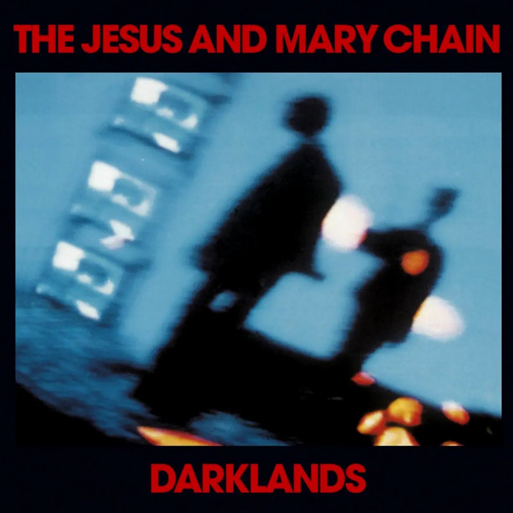

Album#5
Darklands
{kind=link}

专辑信息
- 专辑名称：Darklands
- 歌手：The Jesus and Mary Chain
- 年份：1987-08-30
- 风格：另类摇滚 (Alternative Rock)、后朋克 (Post-Punk)、民谣摇滚 (Folk Rock)
- 时长：36:03

i'm going to the darklands
to talk in rhyme
with my chaotic soul
as sure as life means nothing
and all things end in nothing
and heaven i think
is too close to hell
i wanna move i wanna go
i wanna go
我将要去这凋零之地
用押韵的言语
和我混乱的灵魂说话
生命无疑是没有任何意义的
一切都终将归于虚无
我认为天堂
和地狱太过接近
我想要离开 我想要走
我想要走
Darklands
专辑封面是蓝调时刻般的蓝色，给人一种冷和暗的感觉，而几片模糊、失真的霓虹灯，则在大片暗冷中保留了些许的温暖。
这张专辑里有不少的情歌，浪漫、复古、潮湿，像是窗外一直下着阴冷的细雨，而情人依偎在屋子里，相互取暖。既然是情歌，自然也有不少在情感中挣扎的描述，有一些求而不得的歇斯底里和痛苦。
歌曲旋律编曲听起来比较简单，印象最深的是专辑同名歌曲 Darklands 的前奏，吉他的声音听起来是明亮的，我会想到阳光明媚下波光粼粼的海面。
那天听着这首歌跑步，五六点钟柔和的夕阳洒在公园里，步道两边是葱郁的树木，弥漫着草木的气息，或许是歌词中写的出走的心情吧，旋律给我一种温暖、美好的感觉，尽管歌曲表达的或许并非如此。
歌词
Darklands
i'm going to the darklands
我将要去这凋零之地
to talk in rhyme
用押韵的言语
with my chaotic soul
和我混乱的灵魂说话
as sure as life means nothing
生活无疑是没有任何意义的
and all things end in nothing
所有事情结束一无所获
and heaven i think
我认为天堂
is too close to hell
和地狱太过接近
i wanna move i wanna go
我想要离开 我想要走
i wanna go
我想要走
oh something won't let me
啊 一些事情将不会让我
go to the place
到这个地方
where the darklands are
也正是凋零之地所在
and i awake from dreams
我从梦中惊醒
to a scary world of screams
到了一个让人尖叫的可怕世界
and heaven i think
我认为天堂
is too close to hell
和地狱太过接近
i want to move i want to go
我想要离开 我想要走
i want to go
我想要去
doo doo doo doo doo
嘟嘟嘟嘟嘟嘟嘟
take me to the dark
带我坠入黑暗深渊
oh god I get down on my knees
噢上帝我已双膝跪地
and i feel like i could die
我感到我接近死亡了
by the river of disease
在这污染的河边
and i feel that i'm dying
我感到我正在凋亡
and i'm dying
我正在凋亡
i'm down on my knees
我已经双膝跪地
oh i'm down
我倒下了
i wanna go i wanna stay
我想要离开 我想要留下
i wanna stay
我想要留下
doo doo doo doo doo
嘟嘟嘟嘟嘟嘟嘟
喜欢这首歌的前奏。
Deep One Perfect Morning
deep one perfect morning
如此深沉完美的清晨
as the sun is heading up
太阳伸直懒腰抬起头颅
into the sky
缓慢爬上天空
and i'm sitting here warming 1
我静坐在一片温暖中
to the coldness of the things
然而人情往往冷淡
that meet my eye
与我目光相接时
something in me's stirring
某种东西在我眼中流转
and the moon and all the stars
还有月亮和闪亮繁星
fail to comply
它们从不会屈从谁
and my thoughts are turning backwards
我的思绪退回到从前
and i'm picking at the pieces
拾起点点记忆碎片
of a world that keeps turning
世界一直在我眼中旋转
the screws into my mind
强行闯入我心中的
something in me's chilling
某种东西在我身体里打颤
and nothing in me's willing
没有什么是以我的意志转动的
to focus my attention
聚精会神
on the sky
怅望天空
past the weakened eyes
在我模糊的视线里飘动
that feel and scream
我心领神会直想大呼
into your soul
勒进你的心里
better to paint my hate
最好抹掉我的仇恨
on the walls
就在这墙上
before the picture goes
在图像褪色消失之前
and my thoughts are turning backwards
我的思绪退回到从前
and i'm picking at the pieces
拾起点点记忆碎片
of a world that keeps turning
世界一直在我眼中旋转
the screws in to my mind
强行闯入我心里
and i can see a wide world
我能看到更广袤的世界
for me to tame
受我召唤服从
and i can see a wide world
我能看到更广袤的世界
for me to tame
受我召唤服从
for me to tame
受我召唤服从
for me to tame
受我召唤服从
for me to tame
受我召唤服从
for me to tame
受我召唤服从
Happy When It Rains
Step back and watch the sweet thing
后退一步 瞧瞧这位甜心
breaking everything she sees
她看到的一切都会黯然失色
she can take my darkest feeling
她能驱散我心中的黑暗
tear it up till i'm on me knees
撕碎它直令我五体投地
plug into her electric cool
钻进她的电动冷却机
where things bend and break
一切事物都会在里面扭曲粉碎
and shake to the rule
最终合乎正道法则
talking fast couldn't tell me something
语无伦次没能给我传达什么信息
i would shed my skin for you
我会剥下我的皮求你帮忙
talking fast on the edge of nothing
语无伦次游离在虚无的边缘
i would break my back for you
我会负荆向你求助
don't know why, don't know why
我不知道为何 不知道为何
things vaporise and rise to the sky
万物蒸发升腾到空中
and we tried so hard
我们如此艰难地尝试
and we looked so good
我们看上去自信满满
and we lived our lives in black
我们活在黑暗世界里
but something about you felt like pain
但也会有些东西让你倍感疼痛
you were my sunny day rain
你就是我晴天中飘下的雨
you were the clouds in the sky
你就是天空中闲适的云朵
you were the darkest sky 2
你就是最漆黑的天空
but your lips spoke gold and honey
但你张嘴就能吐出金子和蜜糖
that's why i'm happy when it rains
那就是为何我如此高兴居然下雨了
i'm happy when it pours
我很高兴大雨如倾
looking at me enjoying something
看着我徜徉享受其间
that feels like feels like pain
就像 就像温润的雨
to my brain
降到我的脑海
and if i tell you something
如果我告诉你一些烦心事
you take me back to nothing
你会让我了无牵挂地恢复过来
i'm on the edge of something
我正处在崩溃的边缘
you take me back
你把我拉了回来
and i'm happy when it rains
我很高兴下雨了
and i'm happy when it rains
我很高兴下雨了
and i'm happy now
我现在很高兴
and i'm happy when it rains
我很高兴下雨了
and i'm happy now
我现在很高兴
and i'm happy when it rains
我很高兴下雨了
and i'm happy now
我现在很高兴
and i'm happy now
我现在很高兴
and i'm happy when it rains
我很高兴下雨了
Down On Me
sometimes i can fake a smile
有时我能假装微笑
but still the world looks down on me 3
但这个世界居高临下俯视着我
twenty five years of growing old
虚度二十五载长大成人
it just hangs in front of me
但只在我眼前一晃而过
i can't see or understand why
我还没能明白或弄懂原因
pushing up can drag me down4
把我高高上推 是为了能拉我下来
take my time in everything
把时间花在一切琐碎上
it breaks me up if i can't sing
我会崩溃的 如果我无法歌唱
i can't see
无法视物
i can't touch
无法触摸万物
sometimes in the summer sunshine
有时在夏天烈日下
the sky falls down on me
天空坠落在我怀中
always in the dead of darkdays
总是一片暗夜的死寂
someone's after me 5
有人跟在我身后
talking fast I'm walking backwards
语速极快 我唯唯后退
and my head is in the trees
我的头藏匿在树丛里
you can hang this heavy feeling
你能感到这种悬挂的沉重感觉
hanging down on me
一直垂挂在我身上
sometimes in the summer sunshine
有时在夏天烈日下
the sky falls down on me
天空坠落在我怀中
always in the dead of darkdays
总是一片暗夜的死寂
someone's after me
有人跟在我身后
Nine Million Rainy Days
nine million rainy days
九百万个雨天
have swept across my eyes
从我眼前席卷而过
thinking of you
思念你的时候
and this room becomes a shrine
这个房间就化作神殿
thinking of you
思念你
and the way you are
也思念你的言谈举止
sends the shivers to my head
脑中激起一阵寒颤
you're gonna fall
你即将坠落
you're gonna fall down dead 6
你即将坠落而亡
as far as i can tell
据我所知
i'm being dragged from here to hell
当我被拖曳从这儿直到地狱
and all my time in hell
在地狱中我的所有时光
is spent with you
都会与你共享
i have ached for you
我为你疼痛
i have nothing left to give
我没什么好给的
for you to take
给你需要的
i have no more empty heart
我不再有空荡的心抑或四肢
or limbs to break 7
供你打碎
and the way you are
你的一颦一笑
sends the shivers to my head
令我脑中打颤
you're gonna fall down dead
你即将坠落而亡
as far as i can see
所有我所见的
there is nothing left of me
是我已不剩任何
and all my time in hell
在地狱中我的所有时光
was spent with you 8
都会与你共享
April Skies
hey honey what you trying to say
嘿 宝贝 你想说什么来着
as i stand here
我就站在这里
don't you walk away
你不会一走了之吧？
and the world comes tumbling down
这个世界开始分崩离析
hand in hand in a violent life
手牵手活在暴力世界里
making love on the edge of a knife
在刀刃口上享受欢爱
and the world comes tumbling down 9
这个世界开始分崩离析
and it's hard
很难
for me to say
对我来说
and it's hard
很难
for me to stay
对我来说
i'm going down
我正在堕落
to be by myself
是我自找的
i'm going back
我在衰退
for the good of my health
虽然我一度身强体壮
and there's one thing
有一件事
i couldnt do
我无能为力
sacrifice myself to you 10
为你牺牲我自己
sacrifice
牺牲
baby baby i just can't see
宝贝 宝贝 我只是无法明白
just what you mean to me
你对我意味着什么
i take my aim and i fake my words
我有我的目标 我也会捏造谎言
i'm just your long time curse
我只是长久地受你诅咒
and if you walk away
如果你一走了之
i can't take it 11
我无法接受
but that's the way that you are
但这确实是你的作风
and that's the things that you say
那就是你常挂在嘴边的事
but now you've gone too far
但现在你已经走远
with all the things you say
和你曾说过的许多事情
get back to where you come from
我回到你出生的地方
i can't help it 12
我难以自持
under the april skies
在四月天底下
under the april sun
在四月太阳下
sun grows cold
太阳异常冰冷
sky gets black
天已擦黑
and you broke me up
你甩了我
and now you won't come back
现在你不会再回来
shaking hand, life is dead
和谁握手呢 生活死气沉沉
and a broken heart
一颗破碎的心
and a screaming head 13
头脑中不断呐喊
under the april sky
就在这四月的天底下
under the april sun
就在这四月的太阳下
under the april sky
就在这四月的天底下
Fall
fall to my bended knees
落在我弯曲的膝盖上
shoving up till i freeze
推搡涌动直到我冰封
falling on down to you
簌簌坠落在你身上
down down down
下坠 下坠 下坠
so choked up in the dust
如此充塞于尘埃之中
hand held holy lust
手握圣洁的欲求
dragging me to her cross
拉拽着我到她的十字架下
fall fall fall
坠落 坠落 坠落
so i dragged you down
所以我要拉你下来
c'mon drag me down
来吧 拉我下来
so it seems to be
就像应该的那样
so it seems to me
就像我那样
that i just cant fail to see
我只是恰好碰见
that i just cant fail to see
我只是恰好碰见
falling on down to you
簌簌坠落在你身上
down down down
下坠 下坠 下坠
everybody's falling on me
每个人都坠落在我身上
and I'm as dead as a christmas tree
我像一棵圣诞树一样死去
everybody's falling on me
每个人都坠落在我身上
and I'm as dead as a christmas tree
我像一棵圣诞树一样死去
后朋风格明显的一首。
Cherry Came Too
When she walks towards me
当她走向我
I feel something
我感到某种东西
Crawl beneath my skin
在我皮下直爬
And all the electric stars are shining
所有电灯都在照耀
Beneath my skin and
在我皮肤下
Cherry takes me to the place above
樱桃带我往上
With barbed wire kisses and her love
给我铁丝网般的吻和爱
We're going where the oceans blue
我们会去湛蓝如海洋的地方
Kick the dust and you can come too
赶走尘埃 让你也来
In the light of all my darkest mornings
在我所有最黑暗的早晨
Things fall into place
万物各归其位
And all the soft orange coloured dawnings
所有温柔的橘红色黎明
Fall into place and
各归其位
Cherry's scratching like a grain of sand
樱桃像一粒沙擦擦作响
The trigger itch in the killer's hand
就像杀手手心的瘙痒
Me and cherry are so extreme
我和樱桃都如此极端
Making love to the sound of a scream
中发出一声呐喊
Oh cherry honey you got me stuck on a rope 14
噢 樱桃吾爱 你让我无法自拔
You got me running around
你让我四处奔波
With the fear in my head for you
在我脑中我只怕你
And I want you
但我又要你
And I'll give you my head
我会任你驱使
And all the things it said
包含承诺过的一切事情
And I'll give you my thoughts
我绝不对你有所隐瞒
If those things weren't lost
只要我不健忘
And I'll give you my soul
我会把心也交给你
To beat it with your pole
让你去命令它跳动
I'm gonna give you my head
我会把脑袋给你
You could kick it dead
你能将它敲打至死
And I'll give you my head
我会把脑袋给你
Come on and kick me dead
来吧 把我乱棍打死
Come on and push me down
来吧 推我呀
Come on and drag me down
来吧 拉我呀
Oh cherry be bad
噢 坏透的樱桃
Come on and kiss my head
来吧 吻我的额头
em… 直译歌词的话，感觉是在进行一场疯狂的 SM (Sadism and masochism)。
see also: Cherry Came Too | genius.com
On The Wall
Unlike the mole
不像一只鼹鼠
I'm not in a hole
我不住在洞里
And I can't see anyway
无论如何我也无法明白
Just like a doll
就像一个玩偶
I am one foot tall
我只有脚那么高
But dolls can't see anyway
但玩偶无论如何也无法明白
The frozen stare
冷漠的目光
The clothes and hair
包括衣服和头发
These make me taste like a man
这些都让我近乎是个真人
Tied to a door
紧紧拴在门上
Chained to a floor
铁链垂到地上
An hour glass grain of sand
沙漏中沙粒殆尽
Life in a sack is coming back
窒息的生活就要归来
I'm like the clock on the wall
我就像墙上的挂钟
Swim in the sea
在海中游弋
Swim inside me
在我体内游弋
But you can't swim far away
但你终究游不太远
I never grew
我从没长大
Covered up by you
活在你的阴影里
And nothing grows anyway
无论如何也没什么在成长
Life in a sack is coming back
窒息的生活就要归来
I'm like the clock
我就像时钟
I'm like the clock
我就像时钟
I'm like the clock on the wall
我就像挂在墙上的时钟
on the wall
挂在墙上
on the wall
挂在墙上
About You
I can see
我能看到
That you and me
你和我一起
Live our lives in the pouring rain
在瓢泼大雨中照常度日
And the raindrops beat out of time to our refrain
雨点随意拍打正合我们的节拍
And you and me
你和我一起
Will win you'll see
总会赢得未来 你会发现
People die in their living rooms
人们通常死在他们起居室里
But they do not need this God almighty gloom
但他们并不需要上帝全能的忧悯
There's something warm about the rain
雨中就很惬意温暖
There's something warm
惬意温暖
There's something warm
惬意温暖
There's something warm in everything
一切都那么惬意温暖
I know there's something good
我知道有些美好的东西
About you about you
只和你有关 和你有关
I know there's something warm
我知道有些温馨的东西
There's something warm
温馨的东西
Good about you
恰好关于你
整张专辑似乎讲的都是关于一个伤害他的女人，让他又爱又恨，备受折磨，又不想分开，非常矛盾。在最后这首，他似乎坦白，他还是爱她的，她的身上还是有可取之处，有一些温暖的东西。
这首我听着觉得还蛮浪漫的。
See also: 关于你（和雨中的暖意）| 69er
脚注:
感觉很适合坐在山顶看日出的时候听，缓慢前进的鼓点，就像是太阳慢慢爬升起来。看着日出，静坐在温暖的阳光中，回忆着过往。
这段排列，让我想起了 Big Thief 的 Paul:
I'll be your morning bright goodnight shadow machine
I'll be your record player baby if you know what I mean
I'll be a killer in a thriller and the cause of our death
I'll be your real tough cookie with the whiskey breath
我会是你早晨的阳光、你的晚安吻、你的影机
如果你希望，我也会是你的唱机
是你带着威士忌香味的硬邦邦的曲奇
我也可以成为可怕的杀手，让我们一起死去
无论如何努力想对事物保持乐观，却仍感到彻底绝望与迷失。试图挤出一个微笑，假装快乐的样子，但毫无用处。
无论多么努力想要快乐些，最终却只换来更沉重的打击。
死神？
他无法停止思念那个伤害过自己的人，对方伤他至深，甚至令他诅咒其倒地身亡；然而他仍将对方奉若神明，无时无刻不在想着她。
她又一次伤害了他，彻底毁了他。他告诉她，她已经无法再对他做什么了。
假想分手后，他陷入自省，不再声称自己的时光与她共赴地狱，而是已然与她共历地狱。
对方威胁要分手，关系中或许承受着虐待、伤害
尽管痛苦，但还是不舍得分开，宁愿牺牲自己，承受折磨
明知道不爱，但就是舍不得分开
终于忍受不了，承认自己并不爱她，选择了分开
明明是四月的春天，阳光应该很温暖，却显得阴冷。分开了也还是想着对方，内心极度矛盾，既渴望，又充满怨恨和悲伤。
捆绑 play？